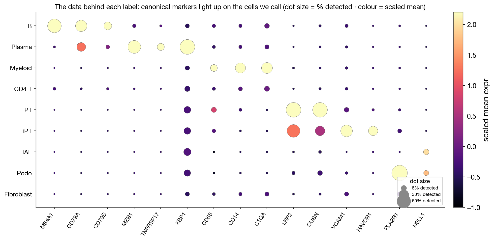
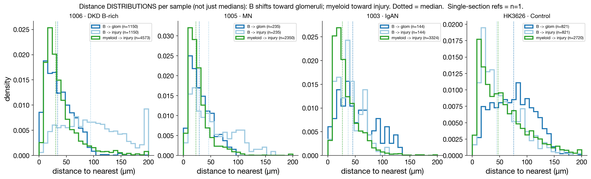
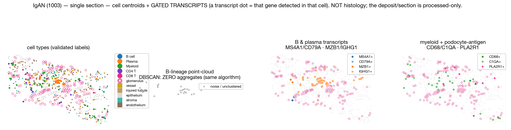
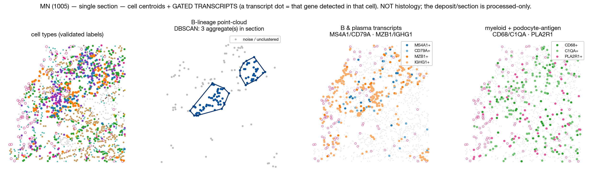
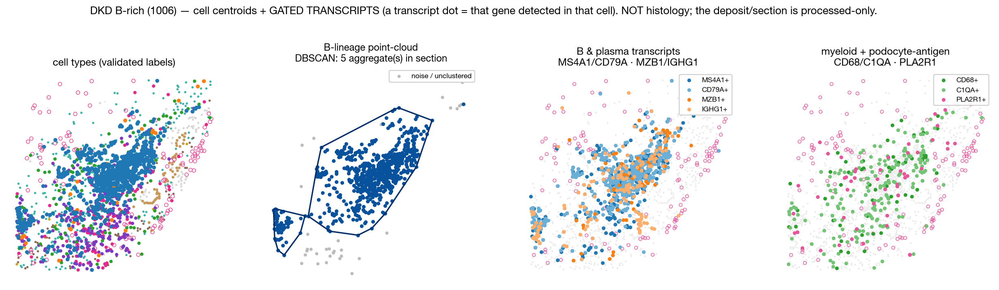
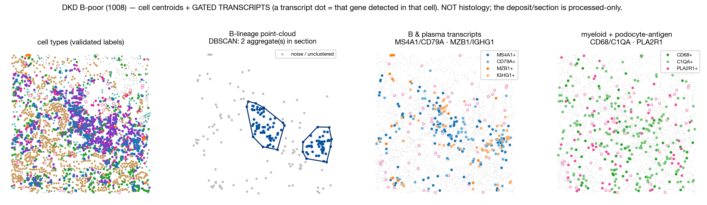
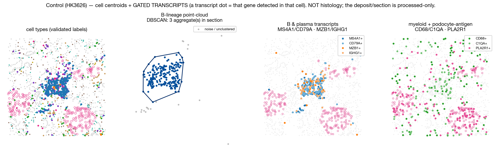

S0 Can spatial transcriptomics tell these diseases apart — and where does it stop?
This walks one question through 16 human-kidney Xenium sections: can in-situ, single-cell, ~5,000-gene spatial transcriptomics show how IgAN, MN and AA-amyloid differ from diabetic kidney disease (DKD) and from controls — and where does the method run out of road?
- DKD vs control is the powered backbone (8 DKD, 3 control). Real replicate spread, shown everywhere.
- IgAN (1003), MN (1005), C3GN (1007) are SINGLE SECTIONS — reconnaissance, hypothesis-generating, nothing is statistically tested. AA-amyloid is n=2. One patient per section, no donor replication.
- Two headline axes are panel-limited and we say so where they bite: the IgA isotype (the defining axis of IgAN) is not measurable; the germinal-centre / follicular-TLS markers are presence-only.
- Credibility a slide reader can audit: our cell calls are validated blind against the published atlas, the markers behind each label are shown (S2), gene availability is audited from the matrix (not assumed), and we caught and reversed two of our own over-claims (S7).
Plain-language bridges — segmentation = drawing each cell's boundary; typing = calling identity from expression; aggregate / DBSCAN = unbiased cell-cluster finding; ambient / spillover = transcripts misassigned across boundaries, the failure mode we control for.
S1 The data, and one colour key for the whole tour
Xenium is in-situ: tissue is never dissociated. Each transcript is imaged in place, assigned to a segmented cell, ~5,000 genes per cell with architecture intact — a multiplexed IHC you can re-stain 5,000 ways. Below is the slide→cells→typing bridge, and the single colour key used in every spatial panel from here on: immune saturated & distinct, epithelium muted, anchors (glomerulus pink, vessel gold) distinct.

(1) Segmentation draws boundaries; (2) typing calls identity from the ~5K-gene profile; (3) the consistent legend (right) — immune saturated, epithelium muted grey, injured tubule tan, glomeruli pink outline, vessels gold. One ~460 µm region of 1006.
Cohort: 16 sections — 8 DKD, 3 control, plus IgAN / MN / AA-amyloid (×2) / C3GN. Large image & per-transcript files stay on disk; we work from the cell-by-gene matrix + coordinates.
S2 Trust the calls: blind re-annotation + the markers behind every label
Before any biology: are the calls real? Two proofs. (a) External: we re-integrated within this atlas and re-annotated blind, then compared to the authors. (b) Internal: the canonical markers light up on exactly the cells we label.

(a) Blind labels vs the authors' published annotation: segment ARI 0.78, immune ARI 0.68 — strong agreement, no peeking.

(b) Show the data behind the abstraction: B = MS4A1/CD79A/CD79B; Plasma = MZB1/TNFRSF17/XBP1; Myeloid = CD68/CD14/C1QA; PT = LRP2/CUBN; iPT = VCAM1/HAVCR1; Podo = PLA2R1/NELL1. Dot size = % detected in that type; colour = scaled mean. Audited fact: NPHS1/NPHS2 are OFF this panel, so podocytes rest on PLA2R1/NELL1 — flagged, not hidden.

Same cells, our typing vs theirs, on the integrated embedding — populations land in the same places.
S3 Top-level composition, by disease group
Start where IHC starts: what is the tissue made of? Every dot is one section, grouped by disease; a median bar only where n>1, so single IgAN/MN/C3GN dots can't masquerade as a group.

Object → number for composition: count each type, divide by all cells.

Coarse lineage. Control epithelial-dominant (74%), near-bare immune (2.8%); every disease loses epithelium, gains immune + stroma. CLR row tracks the raw ordering.

Immune drill-down. MN most immune/plasma-skewed, C3GN most T-skewed, AA highest B. NK/DC not separately typed — not invented. (Representative dots are mapped in the Tissue tour below.)
S4 Organization, not just composition — finding aggregates
Composition says how much immune; not whether it's organized. DBSCAN either finds a dense cluster or doesn't — shown beside the image so the hull is visibly a real lymphoid aggregate, with the negative control: the same algorithm on IgAN finds nothing.

B-lineage → local density → DBSCAN core/hull → burden/10k → threshold. 1006 = 202/10k (B-rich); SAME algorithm on IgAN 1003 = ZERO clusters.

Within DKD a ~3× burden gap → B-rich subgroup = {1006, HK2695}; 8/8 concordant with the authors' B-predominant niche.

Every section, grouped: B+Plasma with hulls. B-rich DKD show compact aggregates; IgAN/controls have none under the identical algorithm.
S5 Two spatial programs (the centerpiece — robust within a section)
Where spatial earns its keep, and it holds at n=1 because it is measured within each section. Two orthogonal logics — and we show the full distributions, not just medians.

Distance object→number: in 1006, B ~34 µm from glomeruli but ~94 µm from injury; myeloid ~30 µm from injury.

The DISTRIBUTIONS behind the medians, per sample: B→glom (solid blue) shifts left of B→injury (light blue); myeloid→injury (green) hugs zero. Single-section refs carry their n on the legend.

Across sections, injury co-localizes with MYELOID (ρ = 0.82 [0.46, 0.95]); the B-lineage association dies under de-circularization (partial 0.13, CI spans 0).

Same B-vs-myeloid distance contrast across all samples: B→glom ≪ B→injury; myeloid hugs injury everywhere.
One sentence: injury recruits myeloid; B-lineage organizes around glomeruli/aggregates.
◆ Tissue tour — per-group drill-downs (see the data, region by region)
For the biologist who wants to SEE every abstraction: five sections, each as cell-type map → B-lineage point-cloud (DBSCAN) → B/plasma transcripts → myeloid + podocyte-antigen transcripts, all region-cropped and on the one colour key.

IgAN (1003), n=1: B-lineage present but the point-cloud yields ZERO aggregates; B/plasma transcripts are sparse and diffuse, not focal. Consistent with deposition-driven disease where pathogenic IgA1 is largely mucosal/marrow-derived (little organized intrarenal B-cell machinery).

MN (1005), n=1: looser mixed aggregates; plasma transcripts (MZB1/IGHG1) relatively prominent; PLA2R1+ podocytes visible around glomeruli (mRNA — NOT the subepithelial IgG deposit).

DKD B-rich (1006): a compact B-lineage aggregate (hull) with dense MS4A1/CD79A B transcripts — the organized end of the spectrum.

DKD B-poor (1008): a small aggregate, sparser B-lineage — the within-DKD contrast.

Control (HK3626) — the MOST immune of the three controls: even here the B compartment is sparse with only a few small aggregates; the other two controls (HK2753, HK3106) have zero. The contrast with B-rich DKD (compact, dense hulls) is the point.
S6 B-lineage programs across nephropathies — and the expert lens
Layering mechanism onto the single-section references gives three apparent B-lineage programs — anecdotes to test, with the panel limits stated exactly where they bite.

B vs Plasma split: MN is the one plasma-skewed glomerular disease, IgG-dominant. LIMIT: IgA (IGHA1) is sub-floor in plasma — the IgA axis is NOT testable; only IgG is.

TLS organization + cell state: only DKD B-rich (HK2695) carries substantial follicular signal; CCL19 is the quantitative T-zone marker; follicular markers are presence-only.

Crops — IgAN / MN / DKD B-rich: organized B-skewed vs plasma-skewed mixed vs diffuse peri-vascular.
| gene | role | detect in target % | fold vs ambient | measurability |
|---|---|---|---|---|
CR2 | TLS-follicle | 7.32 | 3.4× | measurable (passes) |
CXCL13 | TLS-follicle | 3.75 | 74.8× | measurable (passes) |
CXCR5 | TLS-follicle | 5.45 | 89× | measurable (passes) |
AICDA | TLS-GC | 0.33 | 4.7× | sub-floor / ambient |
BCL6 | TLS-GC | 1.03 | 0.6× | sub-floor / ambient |
MKI67 | TLS-GC | 0.05 | 0.8× | sub-floor / ambient |
CCL19 | TLS-Tzone | 2.1 | 2.7× | presence-only (sub-floor) |
CCL21 | TLS-Tzone | 0 | 0× | OFF-PANEL (0 on Xenium; CosMx-only) |
CCR7 | TLS-Tzone | 0.02 | 0.2× | sub-floor / ambient |
SELL | HEV-ish | 0.19 | 0.4× | sub-floor / ambient |
Follicular CXCL13/CXCR5/CR2 are on-panel and B-enriched but low-prevalence; germinal-centre BCL6/AICDA/MKI67 are sub-floor; CCL21 off-panel; PNAd is a protein. -> we call these structures “TLS-like,” not confirmed germinal-centre TLS.
So the DKD B-rich aggregates are TLS-like (follicular chemokine/receptor + B organization), but a confirmed germinal-centre TLS (BCL6/AICDA/MKI67, PNAd+ HEV) is not establishable on this panel.| gene | role | detect in target % | fold vs ambient | measurability |
|---|---|---|---|---|
NELL1 | MN-antigen | 8.45 | 5.9× | measurable (passes) |
PLA2R1 | MN-antigen | 83.22 | 33.2× | measurable (passes) |
THSD7A | MN-antigen | ABSENT (not in panel) | ||
C3 | complement | ABSENT (not in panel) | ||
C4A | complement | measurable | ||
C4B | complement | measurable | ||
CFB | complement | measurable | ||
CD46 | compl-reg | measurable | ||
CD55 | compl-reg | measurable | ||
CD59 | compl-reg | measurable | ||
CFH | compl-reg | measurable |
PLA2R1 (primary MN autoantigen) and NELL1 are measurable at the mRNA level in podocytes; THSD7A and C3 are ABSENT. mRNA ≠ the deposited immune complex (see blind-spot).
PLA2R1 mRNA is measurable and podocyte-specific (83% of podocytes, 33× ambient) — but that is podocyte expression, not the deposited anti-PLA2R1 IgG immune complex (IF/EM). C3 — the hub of complement and the crux of C3GN — is absent from the panel; C4A/C4B/CFB and regulators (CD46/CD55/CD59/CFH) are measurable, so complement can be approached only partially.S7 How we avoided fooling ourselves (two self-corrections)
Ambient / spillover: transcripts occasionally get assigned to the wrong neighbouring cell across a segmentation boundary — a faint smear where signal isn't produced. Uncontrolled, you “discover” spillover. We controlled for it, and it cost us two claims.

Self-correction 1: a peri-aggregate STROMAL BAFF niche did NOT survive an ambient stress-test — non-producer epithelium/endothelium rise like stroma near aggregates → spillover field, not production. RETRACTED.

What survives (canonical BAFF, 03/04): a tissue-wide MYELOID producer, cell-intrinsic, reproducible 16/16, ~24× epithelial floor — but no aggregate-specific niche. APRIL is NO-GO.

Self-correction 2: 'injury sits near B-aggregates' — de-circularized, the injury association is MYELOID, not B-lineage (S5). The B-specific claim is RETRACTED.
Why this matters: the analysis visibly disproves two of its own attractive stories. That discipline is what makes the survivors — validated typing, the two spatial programs — trustworthy.
⚙ Tooling — R/Seurat vs Python, and where squidpy earned its keep
Sourced from the actual imports, not habit.
| ecosystem | used for | why / honest notes |
|---|---|---|
| R · Seurat | mature imaging-ST loaders (LoadXenium), SingleR / Azimuth reference annotation, InSituType, interactive QC (project annotation/benchmark arm, R/01–16) | R has the most mature imaging-ST loaders and reference-mapping (SingleR/Azimuth/KPMP); great for interactive QC on one section. |
| Python · scanpy | the DKD reannotation + EVERY analysis in this walkthrough: backed/streaming reads, normalize/HVG/PCA/neighbors/Leiden/UMAP, harmonypy | the combined object is 8.7 GB / 4.3 M cells — only a backed AnnData (subset → to_memory) fits in 24 GB RAM; harmonypy integrates per-sample batch. |
| squidpy | RCC / cLN neighbourhood statistics: sq.gr.spatial_neighbors, nhood_enrichment, co_occurrence, Moran's I (py/phaseB_*, whitepaper groupB/D) | squidpy shines for graph-based neighbourhood-enrichment across many cell types. It was NOT used for the DKD aggregates/distances — there, an explicit DBSCAN hull + cKDTree distance was simpler and more transparent (a hull object you can see; a distance you can check). |
| scikit-learn · scipy | DKD aggregates (DBSCAN), neighbourhoods/distances (cKDTree), hulls (ConvexHull), stats (Spearman, Mann–Whitney, bootstrap) | the workhorses for the organization + distance layers; no spatial-graph machinery needed for "is this clustered" and "how far to the nearest landmark". |
| matplotlib · figstyle | every panel here; one shared palette | committed PNG (no base64) → the walkthrough stays lightweight and diff-able. |
S8 Synthesis, honest limits, and the study this motivates
What spatial CAN do here: (1) reproduce published identities blind (ARI 0.78/0.68) with the markers shown; (2) quantify composition + organization per section; (3) reveal two orthogonal programs — injury↔myeloid, B-lineage↔glomeruli — robust within a section.
Where it STOPS (stated, not hidden):
- Protein deposits are invisible. The defining IgAN/MN lesions are IF/EM immune complexes — mRNA cannot see them.
- Single-section disease claims are hypotheses. IgAN/MN/C3GN n=1; AA n=2; one patient per section; no donor column.
- Panel limits (audited). IgA isotype unmeasurable; germinal-centre markers (BCL6/AICDA/MKI67) sub-floor; CCL21/PNAd/NPHS1/NPHS2/C3/THSD7A off-panel → "TLS-like" not confirmed TLS, C3 biology out of reach.
- Typing caveats. iPT recall ≈ 0.64 (injury distances conservative); CD8 recall ~0.58.
- Associational. All co-localization is correlational within fixed tissue — no dynamics, no causation.
The powered study this motivates: a multi-donor cohort per nephropathy on a panel carrying the missing isotype + follicular/GC markers (IGHA/IGHM/IGKC, CXCL13/CXCR5/CR2, BCL6/AICDA) and complement (C3), to TEST the three candidate B-lineage programs and the injury↔myeloid vs B↔glomeruli dissociation generated here.
- one consistent colourblind-safe palette across every spatial panel (S1 key reused in S4/S5/tour)
- object→number scoring for composition (S3), aggregates (S4), distance (S5)
- marker-proof dotplot behind every label (S2); gene availability AUDITED from the matrix, not assumed
- per-group tissue drill-downs incl. IgAN & MN full + DKD B-rich/B-poor + Control (TOUR); centroid+transcript, flagged NOT histology
- distance DISTRIBUTIONS not just medians (S5 histograms)
- aggregate determination incl. the ZERO-cluster IgAN/control case
- per-stage method callouts (S2–S5) + tooling section (R/Seurat vs Python; squidpy=RCC/cLN, sklearn/scipy=DKD)
- expert lens: protein-deposit blind spot, TLS measurability table, MN-antigen/complement table, plasma-maturity ceiling
- two self-corrections displayed (S7); panel limits where they bite (S6/S8)
- lightweight: relative-path PNGs (no base64) → committable